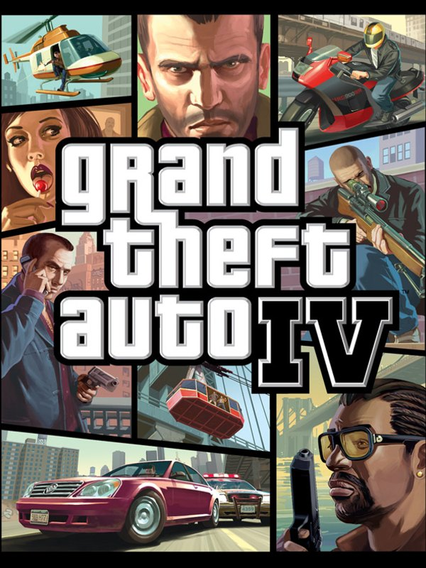

How to enter
Open Niko's phone (d-pad up), press up again for the keypad and dial the number. The same numbers work on PC, PS3 and Xbox 360.
Some cheats block achievements and trophies. Save before you use them.

Open Niko's phone (d-pad up), press up again for the keypad and dial the number. The same numbers work on PC, PS3 and Xbox 360.
Some cheats block achievements and trophies. Save before you use them.
Codes last checked against sources on .
Wrong or missing code? Use Report on the cheat, open an issue or send a pull request on GitHub. Each game is one JSON file.